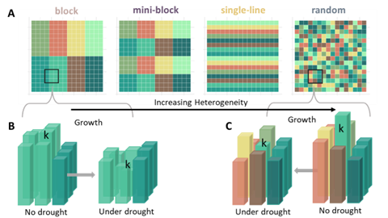

On-going Projects

Forest spatial arrangements against drought
The interactions pattern among trees may offer buffering effect against drought, which increases in frequence and intensity due to climate change. Finding the optimal planting arrangement for buffering drought effects thus is crucial to safeguard the ecosystem function as well as ecosystem servies forests provide

Tree diversity and temporal stability
Diversity can ensure the stable produciton of biomass in grassland communities, measured as the inverse of temporal variability. However, this effect in forests is less studied and the underlying mechanisms are not well understood. This project investigate tree diversity's effect on temporal stability through the lense of species interactions